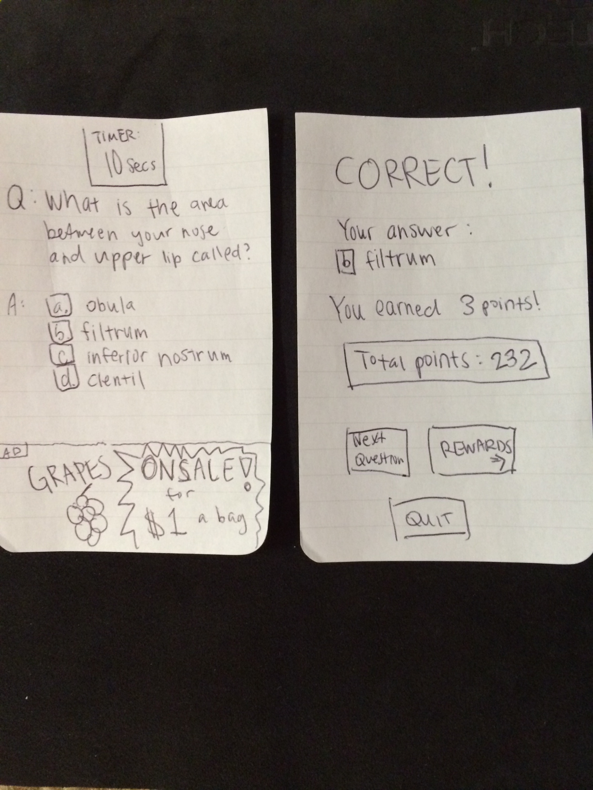
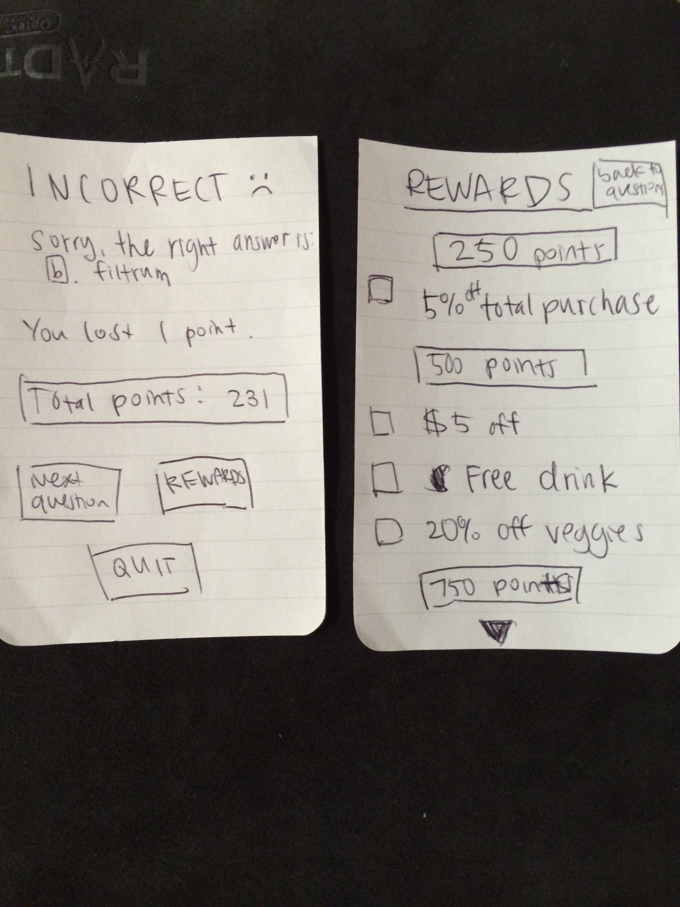
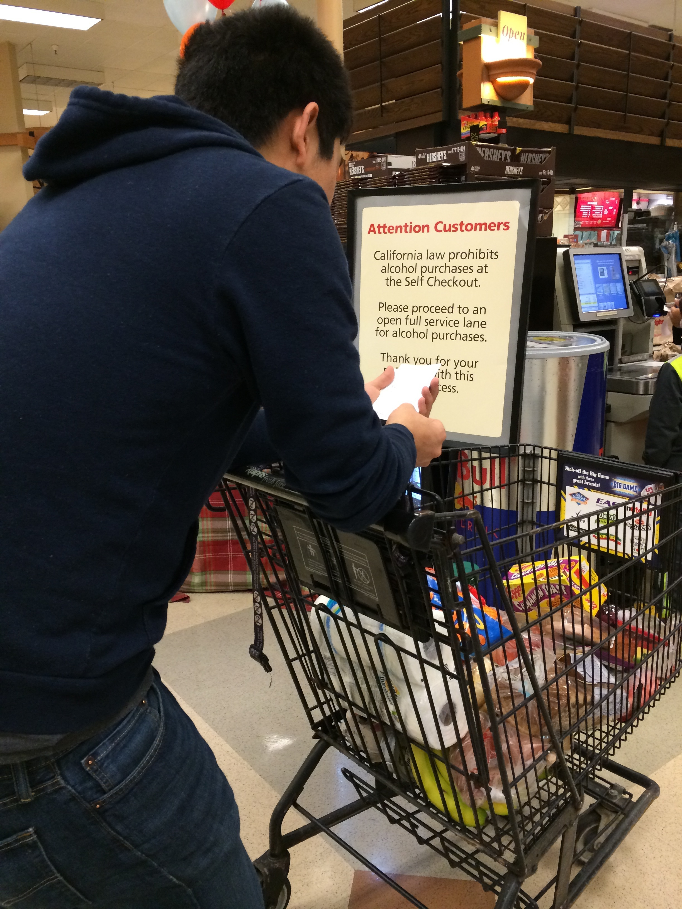
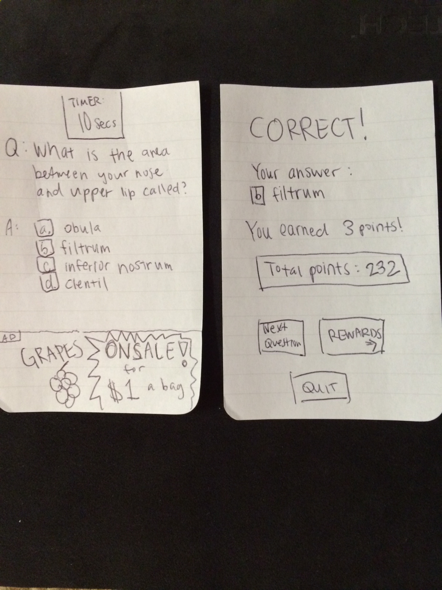
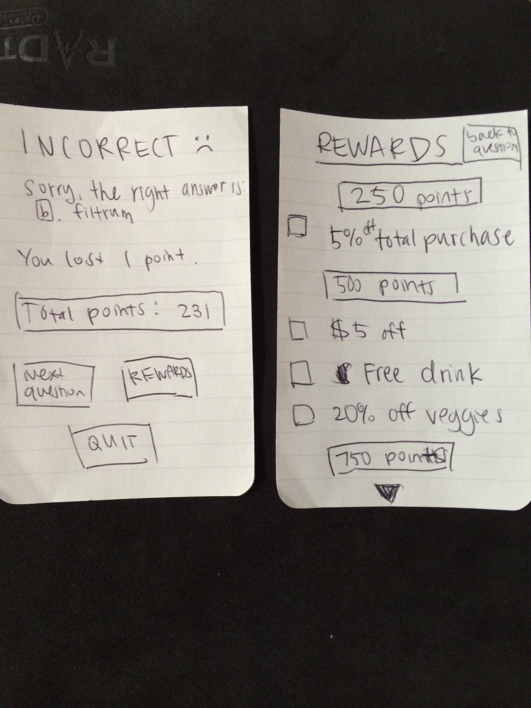
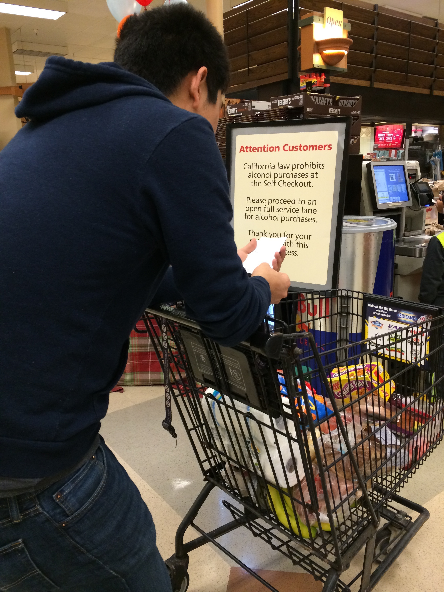
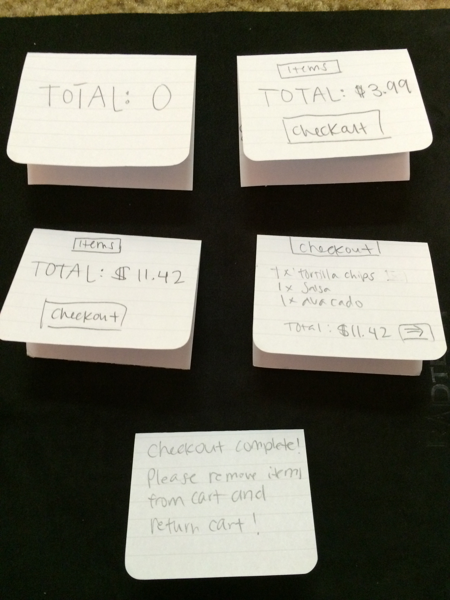
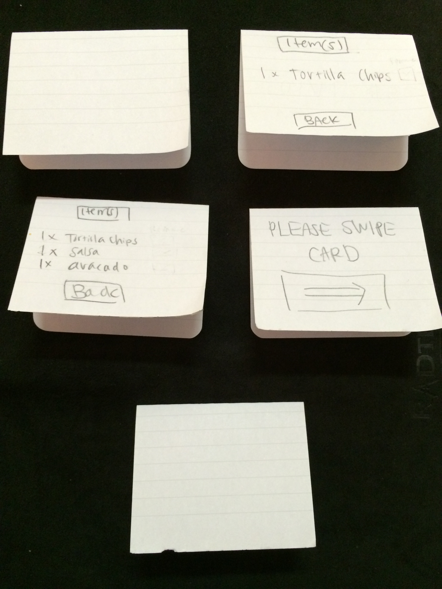
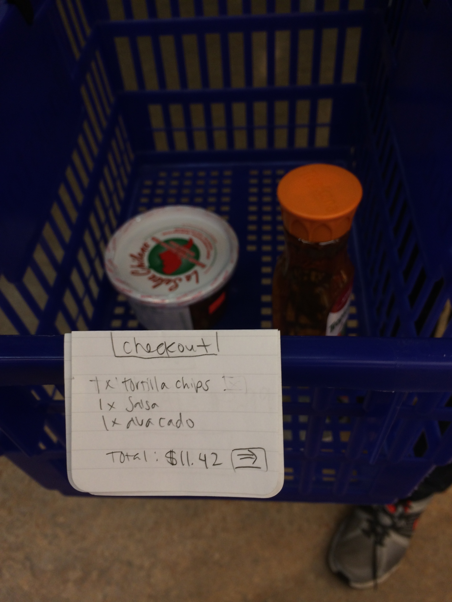
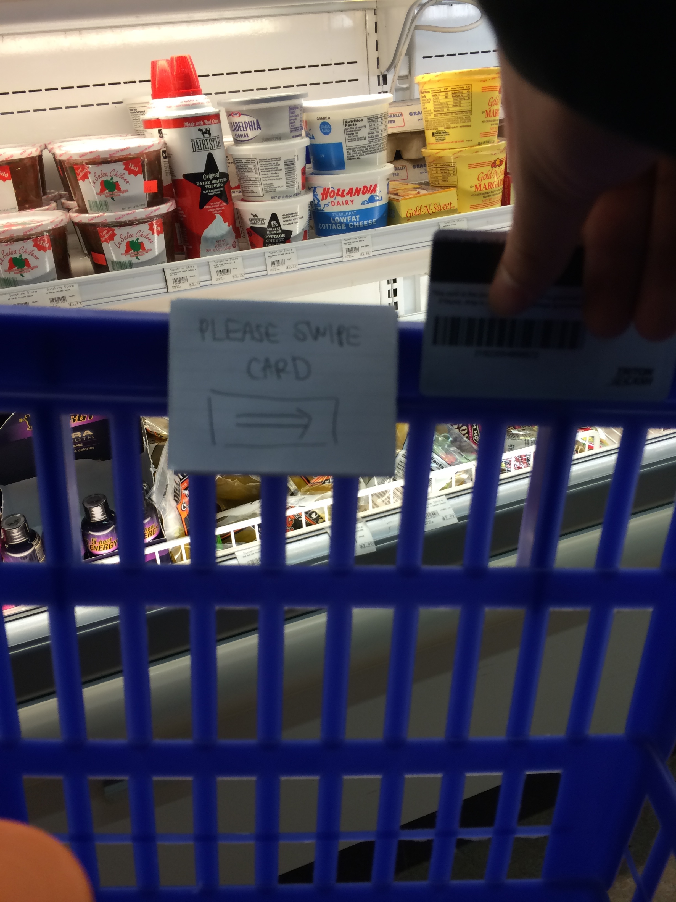

Theresa Lee (A09354604)
Brainstorming
Contributors: Edward Wong, Lynn Vo
Ideas that change the actual line or structure of the line:
- An app where people can queue up whilst shopping, and will recycle people to the end of the line if they are not ready yet
- Use special tags for all food, where walking into the checkout lane automatically registers each item so people just to pay
- Have a certain time limit and the number of people (different for busier hours) that can be in the store
- Use a priority queue based line; people with fewer items can finish sooner, so it optimizes the overall time spent
- Can scan items ahead using barcode scanner app in line so they just have to pay at the counter
- People can pay to cut in line, and then the money gets distributed to rest of the people in line
- Make the store into a dynamically changing maze (per week) so that it takes longer for people to find the exit/checkout
- People have to run on treadmills in line to generate power and once they have generated a certain amount of power, they get queued up to get in line
- Instead of a line, have a waiting area (with a queue numbers) with chairs and one of those large iPad in the center for people to interact with each other
- An app that will approximate the time it takes for you to shop, and the system will intelligently schedule you and automatically buzz you when it is time for your turn at the register
- Order on your phone or online, and go to a line to pick up (faster because no scan or payment time)
- Shopping carts that have sensors to automatically know what you put in your cart and the ability for you to pay (using card) for your total cart
Ideas that help make waiting in line more interesting:
- App for flash cards to study while in line
- Make a trivia game app where customers can rack up points while waiting in line and eventually redeem points for stuff (coupons, a free drink, etc)
- Self diagnosing eye exam: as people walk closer, can look at stationary eye chart to determine if they need glasses or not
- Implement moving walkways automatically move so you don't have to walk when the line moves
- Have a moving walkway so people have to walk at a steady pace to keep their place in line
- Have each customer contribute to an art project or like a fictional story
- Station a TV running an aerobics/fitness program so that people in the line can follow along and exercise
- An app to solve puzzles to get higher priority in line
- Speed dating in line
- Have the floor for the line be plastered with information/story with pictures of a global issue so they can be educated and perhaps be persuaded to donate/support the cause
- Move the free food samples booths right next to the lines so people can try foods while waiting
Prototyping
1. Make a trivia game app where customers can rack up points while waiting in line and eventually redeem points for stuff (coupons, a free drink, etc)
Why? Because as a customer, I can entertain myself with the trivia game and also have incentive to do so because I can save money or get other rewards while having fun!
Photos:
 





2. Shopping carts that have sensors to automatically know what you put in your cart and the ability for you to pay (using card) for your total cart
Why? This would reduce lines almost altogether because everyone can pay for their items almost instantly.
Photos:




Insights
For the first idea:
- The majority of users liked the idea of being rewarded for something entertaining that passes the time waiting in line
- Some users said if they wait was less than a few minutes, they would not take the effort to pull out the game and play
- One user commented on how it could be useful for when they go to trivia night at bars
- One user questioned what would be the incentive for the store to be willing to give out free things
- Another user asked how it would know that you are actually checking out so that people cannot abuse the system to get free stuff (i.e. using it at home to get points)
- Someone suggested that it may be useful to find out what position you are in or how much longer to checkout (perhaps at the end of a round of questions or something)
For the second idea:
- Many users said that if that technology existed (for a shopping cart to know what item is put in), then of course it would be great to use
- One user (it was an old man) said that it probably would not be useful to him because he does not buy too many things in the first place
- Many users were concerned about security issues: someone said it could be vulnerable because maybe someone can hack into it/install a malicious tracker on it/etc, another was concerned about how you can prevent people from stealing these high tech shopping carts
- Someone also asked how it would work for things that are weighed (like some fruits, vegetables, nuts, etc)
- A handful of people said that the line already works pretty well or would not be very useful at convenience stores since most people do not buy many things